Visualization with `ggplot2`
Adam J Sullivan
Assistant Professor of Biostatistics
Brown University
ggplot2
Appropriate graphical analysis may make the conclusions so clearcut that detailed specific analysis is unnecessary
-- David Cox (1978)
ggplot2
- We will begin our journey into statistical graphics with the package
ggplot2. - This is a package by Hadley Wickham and is part of the tidyverse.
- It is a very comprehensive and easily adaptable language of graphics.
What can't ggplot2 do?
- A good place to start might be with what
ggplot2cannot do:- 3d graphs.
- Interactive graphs, use
ggvis - DAGs, see
igraph
- We will now focus on all the things it can do.
ggplot2 components
ggplot2is built off the grammar of graphics with a very intuitive structure.- The base graphics built into R require the use of many different functions and each of them seem to have their own method for how to use them.
ggplot2will be more fluid and the more you learn about it the more amazing of graphics you can create.
ggplot2 components
- We will get started with the components of every
ggplot2object:- data
- aesthetic mappings between variables in the data and visual properties.
- At least one layer which describes how to render the data.
- Many of these are with the
geom_foo()function.
Our Data
- We will be working with data from gapminder
- We can access this by installing the package in R:
install.packages("gapminder")
library(gapminder)
Gapminder Data
## # A tibble: 3,313 x 6
## country continent year lifeExp pop gdpPercap
## <fct> <fct> <int> <dbl> <int> <dbl>
## 1 Afghanistan Asia 1952 28.8 8425333 779.
## 2 Afghanistan Asia 1957 30.3 9240934 821.
## 3 Afghanistan Asia 1962 32.0 10267083 853.
## 4 Afghanistan Asia 1967 34.0 11537966 836.
## 5 Afghanistan Asia 1972 36.1 13079460 740.
## 6 Afghanistan Asia 1977 38.4 14880372 786.
## 7 Afghanistan Asia 1982 39.9 12881816 978.
## 8 Afghanistan Asia 1987 40.8 13867957 852.
## 9 Afghanistan Asia 1992 41.7 16317921 649.
## 10 Afghanistan Asia 1997 41.8 22227415 635.
## # ... with 3,303 more rows
Gapminder Data
- We can see the names of the variables by using the
names()function:
names(gapminder_unfiltered)
## [1] "country" "continent" "year" "lifeExp" "pop" "gdpPercap"
ggplot() Basics
- We will begin with a basic graph of appearances by alignment
library(ggplot2)
ggplot(data=gapminder_unfiltered, aes(x=gdpPercap, y=lifeExp))
ggplot() Basics

ggplot() Statement
- We can see that all we have is the basic layout of axis.
- The data and aes gives us the basic layout.
- We need
geom_foo()to make a proper graph.
geom_point() Statement
- We can add
geom_point()to this:
ggplot(data=gapminder_unfiltered, aes(x=gdpPercap, y=lifeExp)) +
geom_point()
geom_point() Statement

Bar Graphs
- We could then consider simple bar graphs
- For example if we wanted to know how many observations per continent there were:
ggplot(data=gapminder_unfiltered, aes(x=continent)) +
geom_bar()
- Note: With bar graphs we only need the x-axis.
Bar Graphs
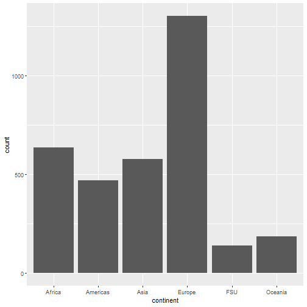
Basic Template
ggplot(data= <DATA>, aes(x=<X-VARIABLE>, y=<Y-VARIABLE>)) +
<GEOM_FUNCTION>()
Aesthetics
Aesthetics
- The basic aesthetics are mapping the data to the x and y axis.
- We can also add:
alpha: makes points transparent to see overlaps betterfill: Fills objects with colorcolor: Changes color of points or lines.shape: Changes spape of points
Aesthetics: alpha
ggplot(data=gapminder_unfiltered, aes(x=gdpPercap, y=lifeExp)) +
geom_point(aes(alpha=1/100))
Aesthetics: alpha
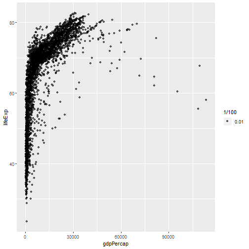
Aesthetics: alpha
- It can be hard to see the transparency when they are so close.
- We can set the transparency to a variable
On Your Own: RStudio Practice #1
- Set
alpha=year - Set
alpha=pop - How does this change things?
Aesthetics: alpha

Aesthetics: color
- We can easily change the color of points and lines using
color
ggplot(data=gapminder_unfiltered, aes(x=gdpPercap, y=lifeExp)) +
geom_point(aes(color="continent"))
Aesthetics: color
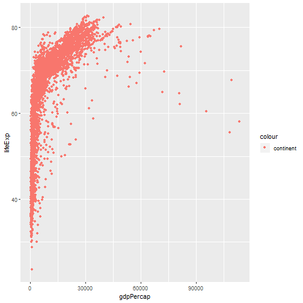
On Your Own: RStudio Practice #2
- Set
color="blue" - How does this change things?
Aesthetics: shapes
- We can change the shape of points based on different variables.
ggplot(data=gapminder_unfiltered, aes(x=gdpPercap, y=lifeExp)) +
geom_point(aes(shape="continent"))
Aesthetics: shapes
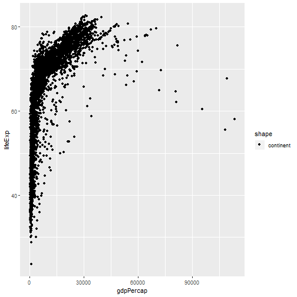
Your Turn
- Try using both shape and color.
- How does this add dimensionality to the graph?
Aesthetics: fill
- We can fill objects with color as well
ggplot(data=gapminder_unfiltered, aes(x=continent, y=lifeExp)) +
geom_boxplot(aes(fill="blue"))
Aesthetics: fill
- This doesnt have the same effect as
color
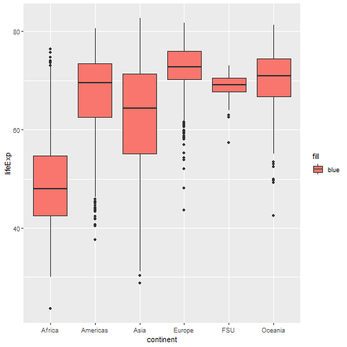
Aesthetics: fill
- We can use other variables to add dimensionality
ggplot(data=gapminder_unfiltered, aes(x=continent, y=lifeExp)) +
geom_boxplot(aes(fill=country))
- I didnt print this as there are so many countries the labels can be hard to deal with at this point.
Geoms
Geoms
- There are many
geom_foo()functions we can use. - The Cheatsheet on
ggplot()is a good place to start for more.
Other Plots: Density
ggplot(data=gapminder_unfiltered, aes(x=lifeExp)) +
geom_density()
Other Plots: Density
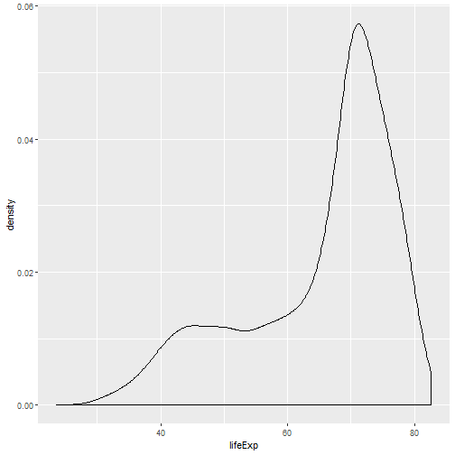
Other Plots: Histogram
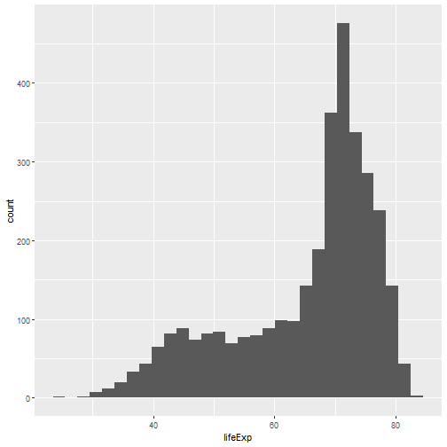
On Your Own: RStudio Practice #3
- There is also a way to change binwidths on a histogram.
- Try the code below and change the
binwidth.
ggplot(data=gapminder_unfiltered, aes(x=lifeExp)) +
geom_histogram(binwidth=1)
More Layers
More Layers
- So far we have just had 2 layers to our graphs.
- We can add many layers to plots.
ggplot(data=gapminder_unfiltered, aes(x=gdpPercap, y=lifeExp)) +
geom_point() +
geom_smooth(method="lm")
--- .class #id
More Layers
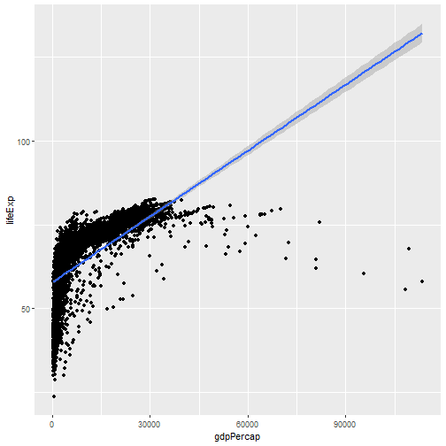
--- .class #id
On Your Own: RStudio Practice #4
- We can actually save plots.
- Then we can add layers to a named plot
- Run the code line by line below to see how this works
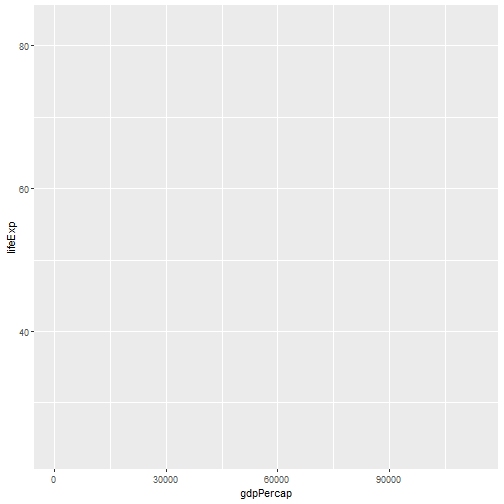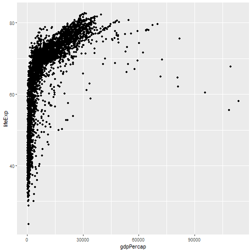 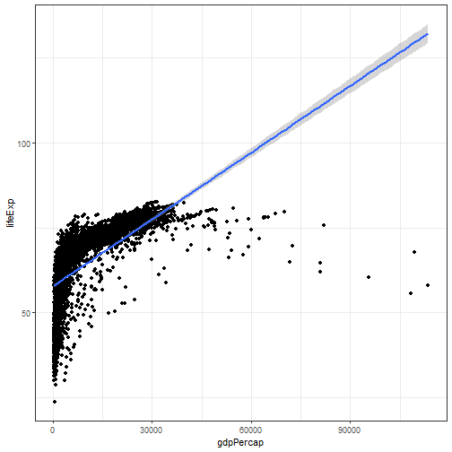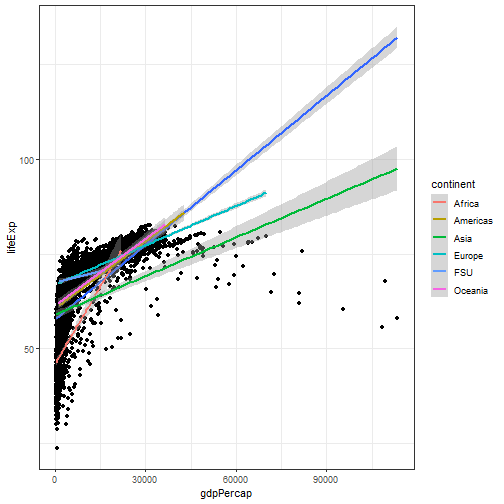
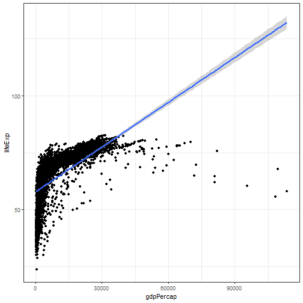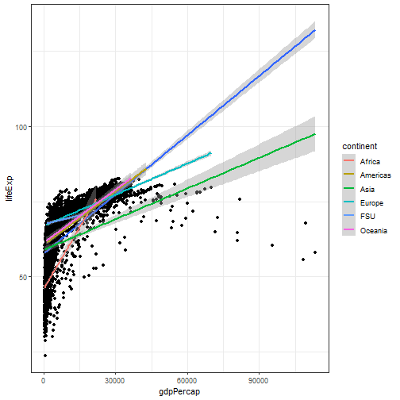